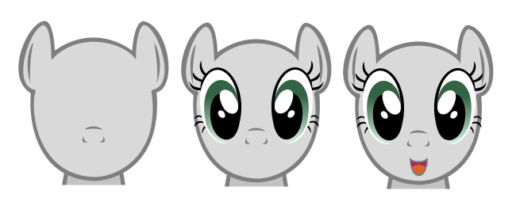
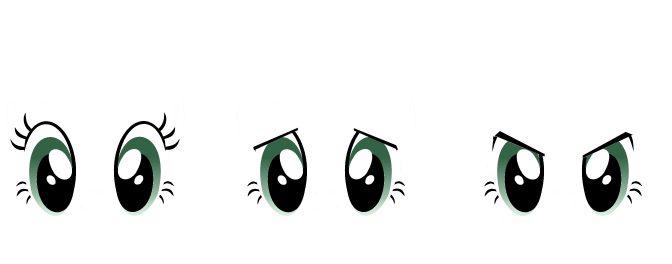

We will now live a wonderful adventure through NPC creation. After going through the steps of this chapter, you will know how to customize interactions, skill usages, combat behaviour, and how to implement your own custom behaviours.
Before doing anything else, let's first scaffold our first character script:
import {CharacterBehaviour} from "./character.mjs";
class Npc extends CharacterBehaviour {
constructor(model) {
super(model);
}
}
export function create(model) {
return new Npc(model);
}CharacterBehaviour is a script helper that implements default behaviour for various interactions, as well as default combat behaviour. We'll mostly be overriding those behaviours to implement our own.
As in any RPG, making up character starts with a character sheet. That part of the magic happens in the Game Editor. Start the game editor, go to the NPC tab, and create a new character sheet as such:
Before saving the character sheet, it needs to be completed. To complete the statistic sheet, you must:
You can also further customize your NPC's statistics by granting it experience and leveling it up, as following:
Don't forget to click the Confirm button once you're done with your character sheet, otherwise none of your changes will be saved. Your changes will be lost if you swap levels or go back to the main menu without saving.
Now that we have a script and a character sheet, we can finally instantiate an NPC in a Level. In the Game Editor, move to the Level tab, and add a character:
The Level editor uses similar interaction principles as the game itself: you have two mouse cursor mode. The first one picks tiles, the second one picks objects. Right click on the tilemap to swap between modes.
Picking an object will select it and display in the right-handed sidebar.
Picking a tile while an object is already selected will move the object to the selected tile.
Now that you've added a new NPC to the level, let's configure it to use the script we created earlier:
Don't forget to click the Save button on the bottom-right side of the screen in order to save your changes.
Once your changes have been saved, if you launch a new game, your NPC will be there waiting for you. It's not doing much yet though: let's fix that !
Your NPCs can talk directly to the player, using the dialog system, but they can also speak outside of the dialog interface, using text bubbles. Text bubbles are displayed on top of a character's sprite for a given amount of time. Text color is used to express the emotion of the character.
We want our NPC to say something specific when the player tries to talk with it. First, we need to setup the script to let the game engine know that our NPC can talk, by overloading the getAvailableInteractions method as following:
class Npc extends CharacterBehaviour {
constructor(model) {
super(model);
}
getAvailableInteractions() {
const interactions = super.getAvailableInteractions();
if (!level.combat)
interactions.unshift("talk-to");
return interactions;
}
}Now, when the player opens the interaction menu, the first interaction in the list will be the talk-to interactions.
Available interactions are:
talk-to
push
look
use
use-object
use-spell
use-skill
Note that use-object, use-spell and use-skill are slightly different from other interactions, and will be covered in another chapter.
Now that our script makes the talk-to interaction available to the player, we need to implement a behaviour for that interaction.
This is done by adding a method to your script, which name is relative to the interaction you want to react to. For the talk-to interaction, the method shall be named onTalkTo. Here's how we'll use it:
class Npc extends CharacterBehaviour {
constructor(model) {
super(model);
}
getAvailableInteractions() {
const interactions = super.getAvailableInteractions();
if (!level.combat)
interactions.unshift("talk-to");
return interactions;
}
onTalkTo() {
level.addTextBubble(this.model, "Hello world !", 3000, "lightgreen");
return true;
}
}
To display our text bubble, we called the level.addTextBubble function.
Our method also returns true: this is optional, but ensures that the game engine's default behaviour for the targeted interaction won't run.
Sometimes, you will want the outcome of a given action to be determined by the player's character statistics. We'll showcase how to access a character statistics by implementing a custom behaviour for the look interaction, that will show additional details to the player if his character has enough perception:
class Npc extends CharacterBehaviour {
constructor(model) {
super(model);
}
getAvailableInteractions() {
const interactions = super.getAvailableInteractions();
if (!level.combat)
interactions.unshift("talk-to");
return interactions;
}
onTalkTo() {
level.addTextBubble(this.model, "Hello world !", 3000, "lightgreen");
}
onLook() {
const isPerceptiveEnough = game.player.statistics.perception > 5;
if (isPerceptiveEnough)
game.appendToConsole("You see " + this.model.statistics.name + ". He looks positively dazzling today.");
else
super.onLook();
}
}In this snippet, we added a onLook method to implement a custom behaviour for inspection.
It starts by accessing the player's statistic sheet using game.player.statistics. Note that the player object is always available through the game global object.
We then check if the character perception is above 5: if it is, we display our own custom message on the game console using game.appendToConsole. Otherwise, we fallback to the default behaviour by calling super.onLook().
To move a character or perform action, you need to use the character's action queue. The action queue allows you to define series of actions to perform. It supports the following actions: Movement, Reach, ItemUse, SpellUse, SkillUse.
In the following code, we will set up our NPC to follow the player, using the Reach action.
class Npc extends CharacterBehaviour {
initialize() {
this.model.tasks.addTask("followPlayer", 5000, 0);
}
followPlayer() {
const requiredDistance = 3;
const distance = this.model.getDistance(game.player);
if (distance > requiredDistance) {
const actions = this.model.getActions();
actions.reset();
actions.pushReach(game.player, requiredDistance);
actions.start();
}
}
}We first schedule a task that will get called every five seconds.
Don't forget to schedule such recurrent tasks in the initialize method, rather than in the constructor. Otherwise, the task would be scheduled each time the character gets instantiated, resulting in a lot more calls to your target method than you probably hoped for.
In the followPlayer method, we order our NPC to ensure that the distance between him and the player is less than 3. When the distance goes over the limit, we fetch the action queue using this.model.getActions(), and set up a Reach action.
When using the action queue, you probably will want to interrupt any action that might already be running. To do so, we call actions.reset() before scheduling any new actions.
The Reach action is scheduled using pushReach. The first parameter is the object you want your character to move towards. The second parameter is the maximum distance you wish to keep with the object.
The Reach action ensures that your character will have a line of sight with the targeted object, meaning it's useful for following, interacting with objects, or finding the proper position to shoot ranged weapons.
Finally, we call actions.start() to trigger the action queue: it will then execute each actions consecutively, until one of them fails, or until the queue is empty. In both cases, your ma implement a onActionQueueCompleted method, and it will get called whenever the action queue is interruped or completed.
We will now start our first combat, and write a simple strategy for our NPC that will consist in running for dear life, away from the player. Then, we will see how to make our own NPC start the combat, by using the Diplomacy features.
There are three methods you script need to implement to properly react during combat:
Let's see those methods in action:
class Npc extends CharacterBehaviour {
onDamageTaken(damage, attacker) {
this.fleeingCharacer = attacker;
}
onTurnStart() {
const isThreatened = this.fleeingCharacter && this.model.hasLineOfSight(this.fleeingCharacter);
if (isThreatened) {
this.model.movementMode = "running";
this.model.moveAway(this.fleeingCharacter);
}
else
level.passTurn(this.model);
}
}
As you can see, we used onDamageTaken to set a character our NPC will flee from.
Then, in onTurnStart, we check if our NPC has a character to flee from. If it doesn't, we immedately call level.passTurn(this.model) to skip our NPC's turn.
When our isThreatened evaluates to true, we set movementMode on our model to trigger the running mode. Characters are walking by default, and you can switch between these two modes whenever you want.
After setting the movement mode, we call this.model.moveAway: that method is a helper to move one case away from a given character. Under the hood, it also uses the action queue, which means that onActionQueueCompleted will also get called once the NPC has moved.
In the current state of affairs, if you were to launch a game and start a fight with that NPC, the game would get blocked, because your NPC doesn't ever finish his turn.
There are two ways to finish a turn: spending all your action points, or calling level.passTurn. In the following code, we'll add a onActionQueueCompleted method to order our NPC to keep running away, or pass its turn:
class Npc extends CharacterBehaviour {
onDamageTaken(damage, attacker) {
this.fleeingCharacer = attacker;
}
onTurnStart() {
this.tryToRunAway();
}
onActionQueueCompleted() {
if (level.combat)
this.tryToRunAway();
}
tryToRunAway() {
const isThreatened = this.fleeingCharacter && this.model.hasLineOfSight(this.fleeingCharacter);
if (isThreatened) {
this.model.movementMode = "running";
this.model.moveAway(this.fleeingCharacter);
if (this.model.getActions().isEmpty())
level.passTurn(this.model);
}
else
level.passTurn(this.model);
}
}
We moved the code previously in onTurnStart to a new custom method, tryToRunAway.
We then call this method both on turn start or when the action queue is completed. Note that, when the action queue is completed, we also check if a combat is currently happening by checking the level.combat variable. That is because the action queue callback get called both in and outside combat, whenver the action queue is depleted.
This new code also handles another scenario: what if our NPC is stuck and cannot move away ? Then, the action queue won't be able to start, it will be empty, even after calling moveAway... and our NPC won't ever pass his turn.
To prevent that from happening, we check that the action queue is active by calling this.model.getActions().isEmpty(). If the action queue is empty, we pass our NPC turn by calling level.passTurn(this.model).
Now that we know how to make our NPC behave in combat, let's have a little talk about how NPCs detect friendly or unfriendly characters, and start fights on their own.
The character sheet defines a faction for each characters. A faction is optional, but most NPC should have one: an NPC without a faction can recognize his own enemies, but he cannot be recognized as an enemy by other NPCs, as only Factions can be defined as enemies (individual characters cannot).
Each character has its own list of enemies. Each faction has its own list of enemies. And each character may be part of one faction.
This behaviour has been implemented to allow infiltration scenarios, in which some characters might fight against the player, but the faction may not be warned about the change in relationship unless the player doesn't manage to get rid of all the witnesses.
Now that we've covered the basics principles of diplomacy, let's edit our NPC code and see how to leverage it to have our NPC trigger a combat:
class Npc extends CharacterBehaviour {
get fleeingCharacter() {
return game.player;
}
getAvailableInteractions() {
const interactions = super.getAvailableInteractions();
if (!level.combat)
interactions.unshift("talk-to");
return interactions;
}
onTalkTo() {
level.addTextBubble(this.model, "Catch me if you can !", 3000, "yellow");
this.model.setAsEnemy(game.player);
}
onTurnStart() {
this.tryToRunAway();
}
onActionQueueCompleted() {
if (level.combat)
this.tryToRunAway();
}
tryToRunAway() {
const isThreatened = this.fleeingCharacter && this.model.hasLineOfSight(this.fleeingCharacter);
if (isThreatened) {
this.model.movementMode = "running";
this.model.moveAway(this.fleeingCharacter);
if (this.model.getActions().isEmpty())
level.passTurn(this.model);
}
else
level.passTurn(this.model);
}
}There are two new things to notice here:
First, as our NPC's threat is no longer defined by who previously attacked him, the fleeingCharacter variable is no longer defined in onDamageTaken, but in a getter that always returns the player character.
Then, we added a custom handler for the onTalkTo interaction, as we had done in chapter 2.4. In this custom handler, we called this.model.setAsEnemy(game.player). After that method is called, your NPC and player will detect each other as enemies. NPCs start a fight whenever an enemy enters their field of view.
You may have noticed that you can also set several NPCs as enemies. Be careful though: it will only work if at least one of the NPC is part of a faction.
If all went well, this is what interactions between our player and NPC should now look like:
We will now create a minimalist dialog, teaching you the basics of dialogs. Start by opening the dialog editor in the game editor, and create a new dialog, as following:
A dialog is basically a set of states and answers. The dialog starts in a given state, and the player then move through states by selecting answers.
We must then create a first state, which will serve as the entry point for our dialog, and will be the first state to load when the player initiates a dialog:
A new interface popped up, allowing you to preview the current state and its answers. Dialogs work with a translation system, which implies that we will first define a translation key, before providing a translation for it. The following video shows you how to set the translation key for the current state:
And now, we add the corresponding translation using the translate button:
The translate button will create a translation for the language currently configured in the game. Use the options menu entry on the main menu to configure the current language.
Translations are stored in the assets/locales folder, using JSON format. You can also edit these files manually.
Before moving on to the next step, please create a second state for your dialog: we will see in the next sub-section how to move from one state to the other.
We will now see how to create and configure answers. There are several important facts about answers you need to know:
Now that we've cleared that up, let's add our first answer. Click the Add answer button on the bottom part of the screen, and create a new answer.
The new interface that popped up can be used to customize our answer. Start by setting a translation key and providing a translation, just as we did for the current state text.
By default, the answer does not have any target state, meaning that it's only effect is to end the dialog. Let's configure that answer so that it redirects the dialog to the second state we created earlier:
import {CharacterBehaviour} from "./character.mjs";
class Npc extends CharacterBehaviour {
constructor(model) {
super(model);
this.dialog = "myDialog";
}
}
export function create(model) {
return new Npc(model);
}
It's as simple as that: just set the dialog property on your script in the constructor. Note that we don't need to overload getAvailableInteractions anymore, as the default behaviour for that method is to include the talk-to interaction when a dialog is set.
Properties such as dialog should not be set in your script initialize method, or else your dialog would only be available the first time the character load.
Everything is ready for a test run. This is the result of what we've done so far:
This is all well and fine, but un-scripted dialogs can only lead us so far. We will now learn how to implement more complex behaviour using the dialog's script.
The dialog script file has been created back when we created the dialog in section 3.1. Open the file at scripts/dialogs/myDialog.mjs:
class Dialog {
constructor(dialog) {
this.dialog = dialog;
}
}
export function create(dialog) {
return new Dialog(dialog);
}The first thing to know is that you have access to the NPC character object through this.dialog.npc. Dialogs are not persistent, so any information you wish to store about a dialog should be stored within the NPC character object.
Scripting dialogs mostly amounts to creating callbacks that you then configure for each state and answers in the Dialog Editor. Here's a list of callbacks and what you can do with those:
| Callback | Return value | Description |
|---|---|---|
| getEntryPoint | state name | Implement this method to programmaticaly define the first state of a dialog. If the method isn't implemented, or doesn't return a state name, the initial state set in the dialog editor will be used instead. |
| Available callbacks | boolean | Available callbacks are methods you may define on answers, allowing you to programmaticaly define whether the answer will be visible to the player or not. Available hooks are called when a state loads. |
| State trigger callbacks | text or object | Use these callbacks if you want to programmatically define the text for a state. Optionally, you may also return a JavaScript object, allowing you to set both the text and the answers for the state. |
| Answer trigger callbacks | state name | These callbacks are called when a player picks an answer. They allow you to programmatically override the default target state for the answer. |
| Answer text callback | text | Use these callbacks to programmatically define the text for an answer |
Dialogs can also have an ambiance and a specific mood. The ambiance is the background displayed behind the character's face, while the mood determines how the face is rendered.
Available ambiances are stored in assets/faces/backgrounds, and you may also add your own, using the PNG format.
The following snippet customizes our dialog to use the wasteland ambiance:
class Dialog {
constructor(dialog) {
this.dialog = dialog;
this.dialog.ambiance = "wasteland";
}
}
export function create(dialog) {
return new Dialog(dialog);
}Moods will typically change in your state trigger callbacks, but for the purpose of the exemple, we'll also set a mood for our NPC on dialog creation in the following code:
class Dialog {
constructor(dialog) {
this.dialog = dialog;
this.dialog.ambiance = "wasteland";
this.dialog.mood = "smile";
}
}
export function create(dialog) {
return new Dialog(dialog);
}Available moods are: angry, cocky, neutral, sad, smile.
Faces are displayed during dialogs as a representation of an NPC. Each face is composed of a set of layers rendered on top of one another. They can optionally be coloured using the character sheet hints for skin and hair colour.
The face folders are located in assets/faces.
Each face folder contains at least following:

Other optional layers can be provided, but let's first take a look at how the layer folders work.
Each layer folder provides PNG pictures for each of the mood supported by the corresponding face. Base moods are: angry, cocky, neutral, sad, smile. Which means that each layer folder should provide angry.png, cocky.png, neutral.png, etc.
You can also add your own moods. If you wanted to add a "confused" mood, you would just have to create the corresponding confused.png file for each layer folder. Then, in a dialog, you would set the mood by using dialog.mood = "confused";, as shown in 2.5 setting the mood.
Faces provide a basic system for batting eyelids. Most of the time, this can work with a plain eyes folder. However, if you want to provide more facial features, as well as skin and eye colour, there are a couple other layer older that you can provide:
You can also optionally provide various hairstyles for your face by adding a hairstyles folder, and adding only a single PNG file for each hairstyle, like this one:
Now that we know how to edit faces, let's look at how to add those. As you can already guess, you'll have to create a new folder in assets/faces. Then, you will have to add your face to the list of available face for a given race, by editing the race script. We already manipulated race scripts in Scripting 2.5.
Open the race script for the race which will use your new face, such as scripts/cmap/races/earth-pony.mjs, and look for the following exporter variable: export const faces = [].
If it does not already exist, add it, and append your new face to the faces array. With this, your face will now become available in the face type input for the corresponding race: